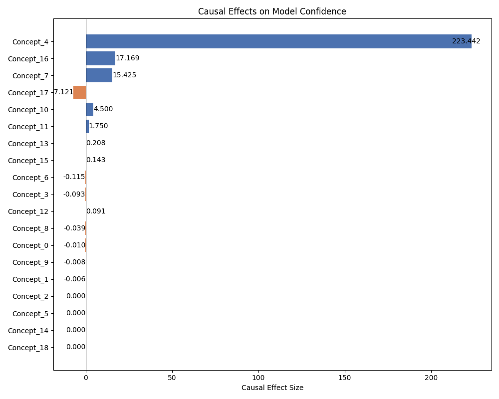
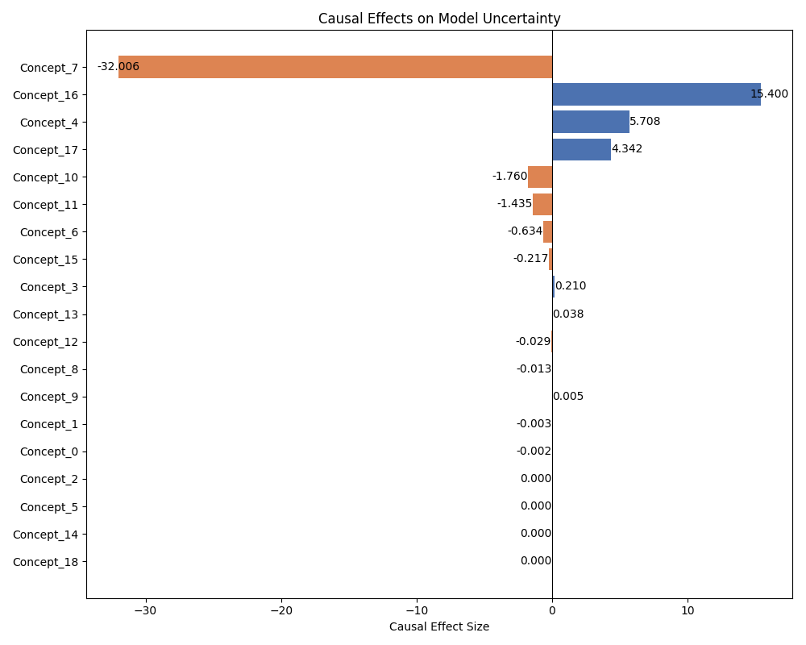

Пример каузального объяснения на основе концептов¶
В этом документе представлено пошаговое руководство по скрипту concept_explainer.py, который демонстрирует использование класса ConceptCausalExplainer из библиотеки applybn. Скрипт показывает полный конвейер для извлечения концептов из данных, обучения предиктивной модели и оценки каузальных эффектов этих концептов на результаты модели, такие как уверенность и неопределенность.
Обзор¶
Скрипт выполняет следующие ключевые шаги:
- Загрузка и предварительная обработка данных: загружает набор данных UCI Adult, выполняет очистку, one-hot кодирование для категориальных признаков и масштабирование для числовых признаков.
- Создание экземпляра объяснителя: создает экземпляр
ConceptCausalExplainer. - Извлечение концептов: использует объяснитель для обнаружения концептов в наборе данных.
- Генерация пространства концептов: преобразует исходное пространство признаков в пространство на основе концептов.
- Обучение предиктивной модели: обучается классификатор Random Forest на исходных признаках.
- Расчет уверенности и неопределенности: вычисляются уверенность и неопределенность модели.
- Оценка каузальных эффектов: оценивается каузальное влияние обнаруженных концептов на уверенность и неопределенность модели.
- Визуализация результатов: генерируются диаграммы "торнадо" для визуализации этих каузальных эффектов.
- Извлечение значений концептов: скрипт определяет исходные признаки, которые наиболее репрезентативны для каждого обнаруженного концепта.
1. Настройка и импорт¶
Сначала мы импортируем необходимые библиотеки. pandas используется для манипулирования данными, sklearn для задач машинного обучения (обучение модели, предварительная обработка и разделение данных), а ConceptCausalExplainer — это основной класс из нашей библиотеки.
import pandas as pd
from rich import print as rprint # для красивого вывода
from sklearn.ensemble import RandomForestClassifier
from sklearn.model_selection import train_test_split
from sklearn.preprocessing import OneHotEncoder, StandardScaler
# Основной класс для каузального объяснения на основе концептов
from applybn.explainable.causal_analysis import ConceptCausalExplainer
2. Загрузка и предварительная обработка данных¶
Функция load_and_preprocess_data обрабатывает получение набора данных UCI Adult, который является распространенным эталонным набором данных для задач классификации.
def load_and_preprocess_data():
"""Загрузка и предварительная обработка набора данных UCI Adult.
Возвращает:
tuple: (X_processed, y, X_original), где:
X_processed (pd.DataFrame): обработанные признаки, готовые для моделирования.
y (pd.Series): бинарные метки (доход >50K или <=50K).
X_original (pd.DataFrame): исходные признаки до кодирования/масштабирования.
"""
# URL для набора данных UCI Adult
url = "https://archive.ics.uci.edu/ml/machine-learning-databases/adult/adult.data"
# Определение имен столбцов согласно описанию набора данных
column_names = [
"age", "workclass", "fnlwgt", "education", "education-num",
"marital-status", "occupation", "relationship", "race", "sex",
"capital-gain", "capital-loss", "hours-per-week", "native-country", "income",
]
# Чтение данных, рассматривая ' ?' как значения NaN
data = pd.read_csv(url, names=column_names, header=None, na_values=" ?")
# Удаление строк с любыми пропущенными значениями
data.dropna(inplace=True)
# Сброс индекса DataFrame после удаления строк
data.reset_index(drop=True, inplace=True)
# Разделение признаков (X) и целевой переменной (y)
# X_original хранит признаки до любого преобразования, что полезно для интерпретации концептов позже
X_original = data.drop("income", axis=1).reset_index(drop=True)
# Преобразование столбца дохода в бинарные метки (1, если >50K, иначе 0)
y = (
data["income"]
.apply(lambda x: 1 if x.strip() == ">50K" else 0)
.reset_index(drop=True)
)
# Определение категориальных столбцов для one-hot кодирования
categorical_cols = X_original.select_dtypes(include=["object"]).columns
# Инициализация OneHotEncoder:
# - sparse_output=False означает, что он возвращает плотный массив
# - handle_unknown='ignore' означает, что если во время преобразования встречается неизвестная категория, она игнорируется
encoder = OneHotEncoder(sparse_output=False, handle_unknown="ignore")
# Применение one-hot кодирования
X_encoded = pd.DataFrame(
encoder.fit_transform(X_original[categorical_cols]),
columns=encoder.get_feature_names_out(categorical_cols),
)
# Отделение числовых столбцов
X_numeric = X_original.select_dtypes(exclude=["object"]).reset_index(drop=True)
# Объединение числовых признаков с новыми one-hot закодированными признаками
X_processed = pd.concat(
[X_numeric.reset_index(drop=True), X_encoded.reset_index(drop=True)], axis=1
)
# Определение числовых столбцов для масштабирования
numeric_cols_to_scale = X_numeric.columns # Примечание: они из исходного X_numeric, а не X_original
# Инициализация StandardScaler для стандартизации признаков путем удаления среднего и масштабирования до единичной дисперсии
scaler = StandardScaler()
# Применение масштабирования к числовым столбцам в обработанном наборе признаков
X_processed[numeric_cols_to_scale] = scaler.fit_transform(X_processed[numeric_cols_to_scale])
# Сброс индекса полностью обработанного набора данных
X_processed.reset_index(drop=True, inplace=True)
return X_processed, y, X_original
3. Основной блок выполнения¶
Функция main организует весь процесс объяснения.
def main():
"""Демонстрация использования CausalModelExplainer на примере набора данных."""
# Шаг 1: Загрузка и предварительная обработка данных
X, y, original_X = load_and_preprocess_data()
# Шаг 2: Создание наборов данных для обнаружения (D) и естественного (N)
# Набор данных разделяется на набор для 'обнаружения' (D), используемый для извлечения концептов,
# и 'естественный' набор (N), который может использоваться для других целей (например, для проверки, хотя здесь это явно не делается).
# shuffle=False используется для сохранения исходного порядка при необходимости, хотя random_state обеспечивает воспроизводимость.
D, N = train_test_split(X, test_size=0.3, random_state=42, shuffle=False)
# Сброс индексов для D и N, чтобы убедиться, что они чистые и начинаются с 0.
# drop=False сохраняет старый индекс как новый столбец, что может быть полезно для отслеживания.
D.reset_index(drop=False, inplace=True)
N.reset_index(drop=False, inplace=True)
# Шаг 3: Создание экземпляра объяснителя
# Это создает объект нашего класса ConceptCausalExplainer.
explainer = ConceptCausalExplainer()
# Шаг 4: Извлечение концептов
# Метод extract_concepts анализирует набор данных для обнаружения (D) и естественный набор данных (N)
# для выявления значимых кластеров точек данных, которые затем рассматриваются как концепты.
cluster_concepts = explainer.extract_concepts(D, N)
rprint(f"Обнаруженные концепты (назначения кластеров): {cluster_concepts}")
# Шаг 5: Генерация пространства концептов
# Метод generate_concept_space преобразует исходное пространство признаков (X)
# в новое пространство (A), где каждое измерение может представлять обнаруженный концепт.
# Обычно это включает присвоение каждой точки данных в X одному или нескольким концептам.
A = explainer.generate_concept_space(X, cluster_concepts)
rprint(f"Пространство концептов A:\n{A.head()}")
# Шаг 6: Обучение предиктивной модели
# Для демонстрации обучается RandomForestClassifier на исходных обработанных признаках (X) и метках (y).
# Предсказания этой модели будут проанализированы на уверенность и неопределенность.
predictive_model = RandomForestClassifier(n_estimators=100, random_state=42)
predictive_model.fit(X, y)
# Шаг 7: Расчет уверенности и неопределенности
# Метод calculate_confidence_uncertainty использует обученную модель
# для определения ее уверенности и неопределенности для каждого предсказания на наборе данных X.
confidence, uncertainty = explainer.calculate_confidence_uncertainty(
X, y, predictive_model
)
rprint(f"Рассчитанная уверенность (первые 5): {confidence[:5]}")
rprint(f"Рассчитанная неопределенность (первые 5): {uncertainty[:5]}")
# Шаг 8: Подготовка данных для оценки каузального эффекта
# Создаются копии данных пространства концептов (A) и добавляются рассчитанные уверенность и неопределенность в качестве новых столбцов.
# Они будут служить выходными переменными для оценки каузального эффекта.
D_c_confidence = A.copy()
D_c_confidence["confidence"] = confidence # Добавление уверенности в качестве столбца
D_c_uncertainty = A.copy()
D_c_uncertainty["uncertainty"] = uncertainty # Добавление неопределенности в качестве столбца
# Шаг 9: Оценка каузальных эффектов
# Метод estimate_causal_effects_on_continuous_outcomes вызывается дважды:
# один раз для уверенности и один раз для неопределенности. Он оценивает, как изменения в
# наличии или активации концептов влияют на эти непрерывные результаты.
effects_confidence = explainer.estimate_causal_effects_on_continuous_outcomes(
D_c_confidence, outcome_name="confidence"
)
rprint(f"Каузальные эффекты на уверенность:\n{effects_confidence}")
effects_uncertainty = explainer.estimate_causal_effects_on_continuous_outcomes(
D_c_uncertainty, outcome_name="uncertainty"
)
rprint(f"Каузальные эффекты на неопределенность:\n{effects_uncertainty}")
# Шаг 10: Генерация визуализаций
# Диаграммы "торнадо" используются для визуализации оцененных каузальных эффектов.
# Эти диаграммы показывают относительную важность и направление влияния каждого концепта на результат.
explainer.plot_tornado(
effects_confidence, title="Каузальные эффекты на уверенность модели", figsize=(10, 8)
)
explainer.plot_tornado(
effects_uncertainty,
title="Каузальные эффекты на неопределенность модели",
figsize=(10, 8),
)
# Шаг 11: Извлечение и логирование значений концептов
# Метод extract_concept_meanings помогает интерпретировать, что представляет собой каждый обнаруженный концепт
# путем определения наиболее важных исходных признаков (из original_X) в каждом кластере концептов из набора данных D.
selected_features_per_concept = explainer.extract_concept_meanings(
D, cluster_concepts, original_X
)
# Результаты выводятся в консоль.
rprint(f"\nДетали признаков концептов: {selected_features_per_concept}")
# Стандартная идиома Python для запуска основной функции при выполнении скрипта.
if __name__ == "__main__":
main()
 
Заключение¶
Этот пример скрипта демонстрирует комплексный рабочий процесс применения каузальных объяснений на основе концептов. Следуя этим шагам, пользователи могут получить представление о том, как абстрактные концепты, полученные из их данных, влияют на поведение и результаты их моделей машинного обучения. Визуализация каузальных эффектов и интерпретация значений концептов обеспечивают действенное понимание, выходящее за рамки стандартной важности признаков.
Не забудьте заменить пути к изображениям-заглушкам на фактические пути к вашим сгенерированным графикам.